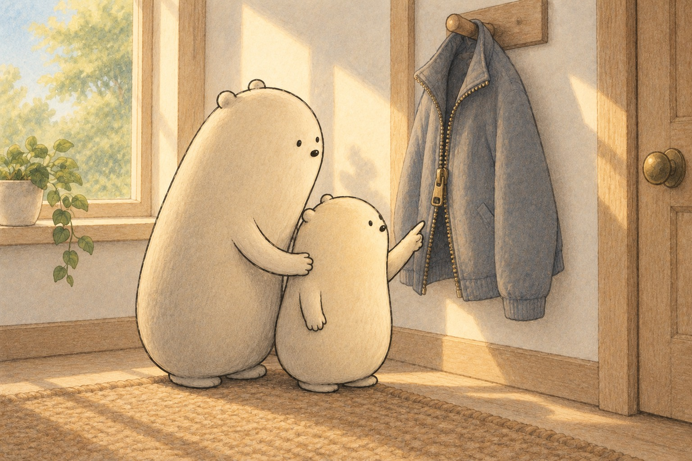
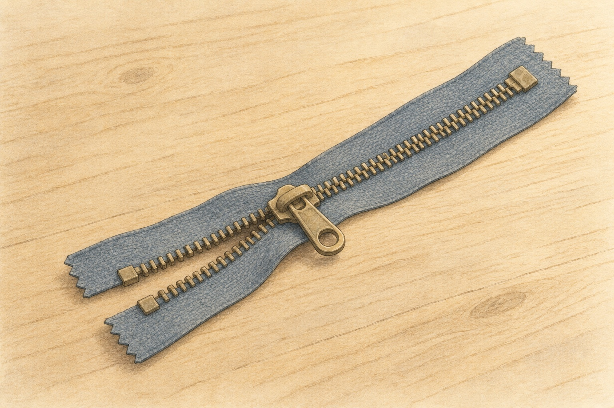
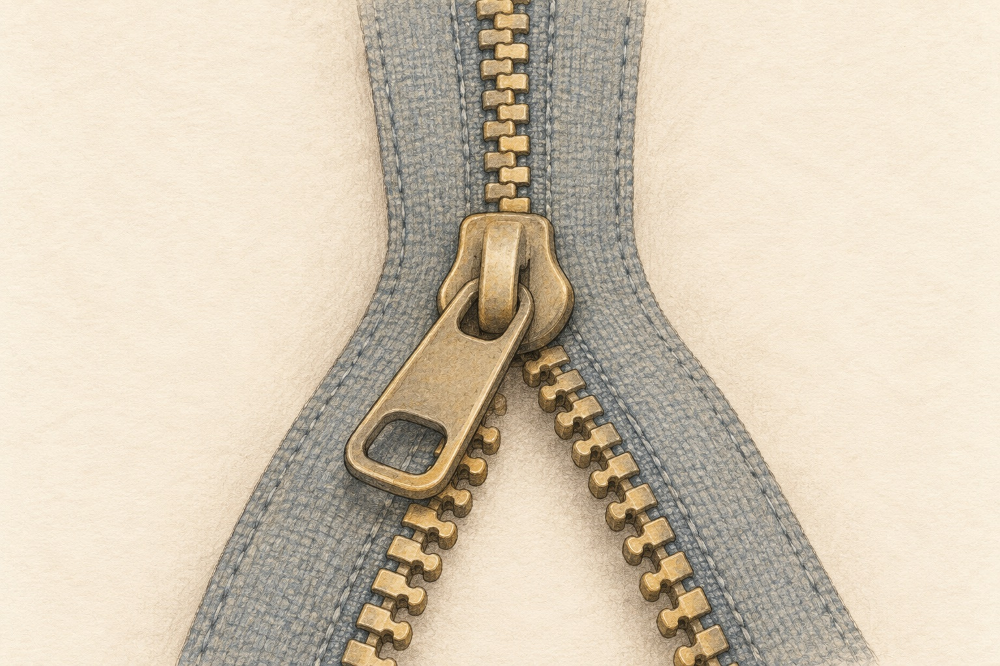
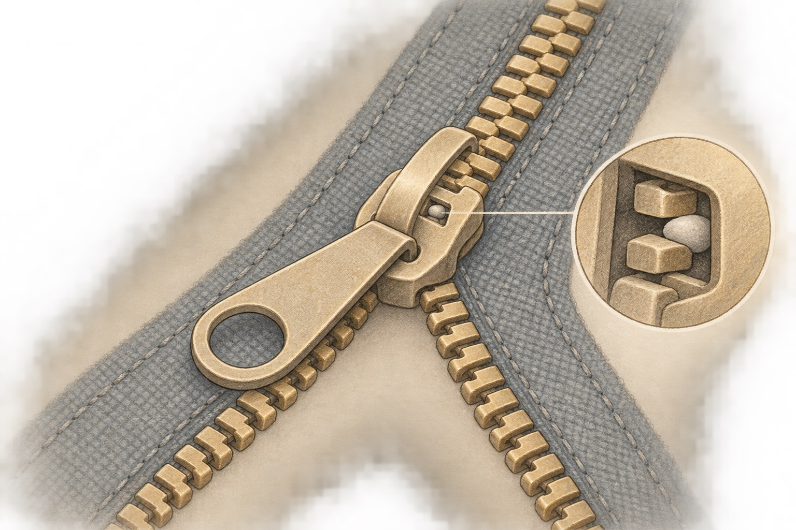
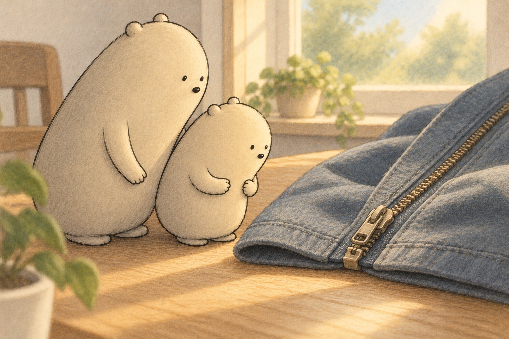
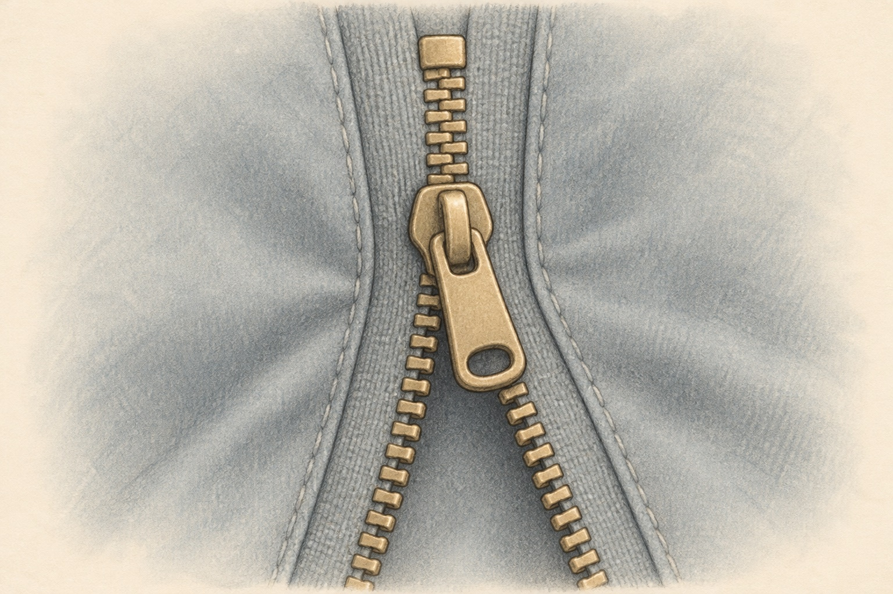

What holds a zipper shut, and what lets a jacket zipper come all the way apart?

Where shall we look?

A zipper has three main parts: tape, teeth and slider.
What are the main parts of a zipper?
Find the two cloth strips, the rows of small teeth on them, and the one slider that rides along the teeth.
A little explanation & something to try
A zipper has three main parts. The tape is the cloth strip sewn to the jacket. The teeth, also called elements, are fixed in a row along each tape. The slider is the piece you pull up and down to join or part the teeth.
Try this. Find a zipper on a jacket, bag or pencil case. Point to the tape, the teeth and the slider, and say each name out loud.

Each tooth tucks between two teeth on the other side.
How do the teeth hold the two sides together?
Compare the open teeth at the bottom with the joined teeth at the top. See how each tooth sits between two teeth on the other side.
A little explanation & something to try
Each tooth has a little bump on one side and a hollow on the other. The teeth on the left are set halfway between the teeth on the right. When the slider presses them together, each bump tucks into the hollow of the next tooth, and a joined row of teeth is called the chain.
Try this. Hold your hands flat with fingers spread. Slide them together so each finger fits between two fingers of the other hand. Now pull your hands apart sideways and feel how the fingers hold.

With the pull-tab flat, a tiny piece holds the slider still.
Why doesn't a zipper slide open on its own?
Look at the pull-tab lying flat against the slider, and the tiny bump under the slider that sits between two teeth.
A little explanation & something to try
Many sliders have a lock. When the pull-tab is let go or pressed flat, a tiny piece under the slider slips between the teeth and holds it still. Lifting the pull-tab moves that piece out of the way so the slider can move again.
Try this. Find a zipper with a pull-tab. Let go of the tab and gently tug the two sides of the cloth. Then lift the tab and slide it. Tell what changed.

The pin goes fully into the box so both rows start lined up.
How does a jacket zipper come all the way apart and start again?
Find the thin pin at the bottom of one tape and the little box at the bottom of the other tape, where the slider waits.
A little explanation & something to try
A jacket zipper is an open-end zipper. One tape ends in a thin insert pin. The other tape ends in a retainer box that holds the slider at the bottom. Pushing the pin fully into the box lines the two rows up, so the slider can start meshing teeth from the very first pair.
Try this. Look at the bottom of a jacket zipper. Find the pin and the box. Watch how the pin goes all the way in before the slider moves up.
Find the zipper patterns
Look for the step between numbers. Fill each missing number.
Each tooth tucks between two teeth on the other side.
Choose one pattern and tell how you know the missing number fits.
1. Big counts zipper teeth in groups of ten. What number comes next?
20, 30, 40, ___
A small hint
Each new group adds 10 teeth.
2. Little marks the zipper tape every 5 centimeters. What number is missing?
25, 30, ___, 40
A small hint
Add 5 to the number before the blank.
3. Each time the slider moves, one more pair of teeth meshes: one tooth from each side. Counting teeth by twos, what number comes next?
8, 10, 12, ___
A small hint
Count forward by 2 each time.
4. Little counts the teeth on both sides of the chain, two at a time. What number is missing?
40, ___, 44, 46
A small hint
The count goes up by 2 each time.
5. Big counts jacket zippers in a shop, five on each rack. What number comes next?
55, 60, 65, ___
A small hint
Keep adding 5.
6. Little counts zipper stops in bags of ten. What number is missing?
35, 45, ___, 65
A small hint
Count on by 10 from the number before the blank.
Six clues inside a zipper
How a Zipper Holds Shut and Comes Apart
A jacket zipper
Big and Little found a jacket hanging on a peg, its zipper half closed. Above the slider the two sides were joined in one neat row. Below it they hung apart. Little wondered how one small piece could close a whole jacket. Big said a zipper is a team of small parts, each with its own job.
Where on the zipper are the two sides joined, and where are they apart?
Tape, teeth, slider
Laid flat on a table, a zipper shows its three main parts. The tape is the cloth strip that gets sewn to the jacket. The teeth, also called elements, are fixed in a row along each tape. The slider rides along both rows. Pull it one way and it joins the teeth. Pull it the other way and it parts them.
Which part moves, and which parts stay in place on the cloth?
Teeth that mesh
Up close, each tooth has a little bump on one side and a hollow on the other. The left teeth sit halfway between the right teeth, like fingers ready to fold together. Inside the slider, the two rows are squeezed together at an angle, so each bump tucks into the hollow of the next tooth. Teeth that fit together like this mesh, and the joined row is called the chain.
Why must the teeth on one side sit halfway between the teeth on the other side?
A hidden lock
Little tugged the two sides of the jacket, but the slider did not move. Big pointed under the slider. Many sliders hide a lock. When the pull-tab lies flat or is let go, a tiny piece slips between two teeth and holds the slider still. Lift the pull-tab and the piece moves out of the way, so the slider can glide again.
What does lifting the pull-tab change inside the slider?
Pin into box
A jacket zipper comes all the way apart. It is called an open-end zipper. At the bottom, one tape ends in a thin insert pin, and the other ends in a small retainer box where the slider waits. The pin must go fully into the box. Then both rows start lined up, and the slider can mesh the very first pair of teeth.
What could go wrong if the pin is only pushed halfway into the box?

Stops at the ends
At the very top of the zipper, Little found a tiny metal piece above the last teeth. It is a top stop. A stop at each end keeps the slider from running off the teeth. On a jacket, the retainer box is the stop at the bottom. Tape, teeth, slider, lock, pin, box and stops all work together each time a jacket closes.
Why does a zipper need a stop at each end of the teeth?